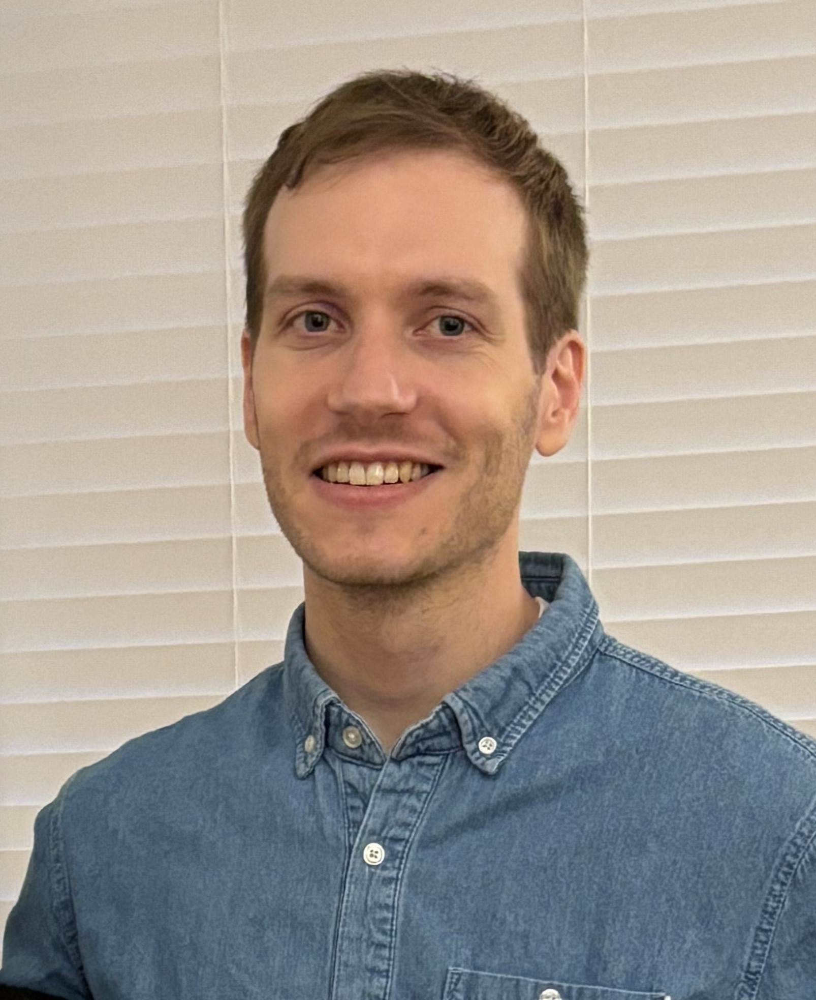

Anthony Fuller - UNDER ACTIVE CONSTRUCTION
I am a 3rd/final-year Ph.D. student at Carleton University supervised by Jim Green (from Carleton) and Evan Shelhamer (from UBC / Vector Institute). I am interested in deep learning, specifically, computer vision, self-supervised learning, transformers, and applications (e.g., remote sensing and biomedical). I have an M.A.Sc. in Systems and Computer Engineering (2023) and a B.Eng. in Aerospace Engineering (2015), both from Carleton.

Selected Publications
-
Simpler Fast Vision Transformers with a Jumbo CLS Token
-
LookWhere? Efficient Visual Recognition by Learning Where to Look and What to See from Self-Supervision
-
Galileo: Learning Global & Local Features of Many Remote Sensing Modalities
-
LookHere: Vision Transformers with Directed Attention Generalize and Extrapolate
-
CROMA: Remote Sensing Representations with Contrastive Radar-Optical Masked Autoencoders
-
SatViT: Pretraining Transformers for Earth Observation